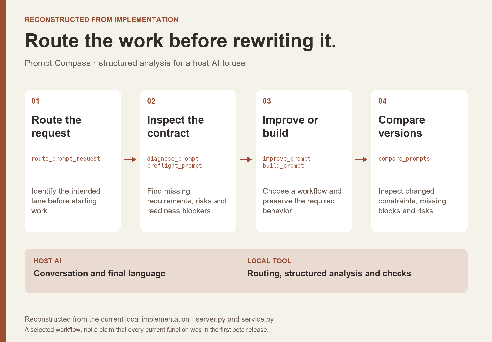
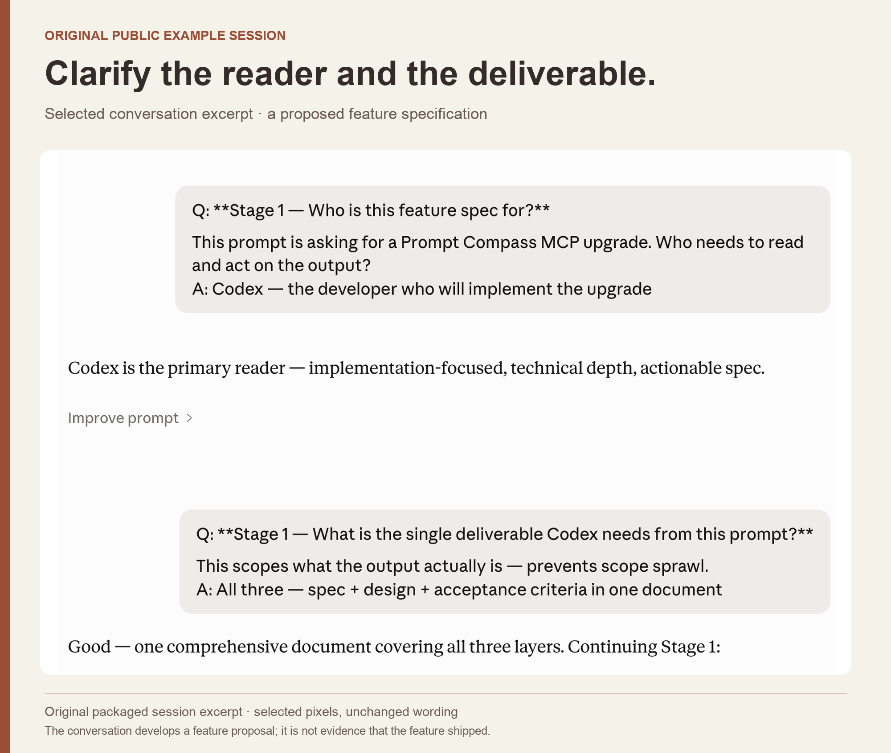

Prompt Compass / PROMPT ENGINEERING · EVALUATION
Keep the job intact when the prompt changes.
I built a prompt tool that checks what an instruction needs to preserve. A cleaner rewrite can still lose the requirements that make an answer useful.

THE PROBLEM
What needed to become clearer?
Improving a prompt is easy to confuse with improving its wording. If a rewrite drops a required field, a constraint, or a review condition, the resulting answer can sound better while failing the original task.
MY CONTRIBUTION
Turn the task into a usable workflow.
I built Prompt Compass to help an AI assistant inspect a request, identify missing requirements, choose an improvement route, and compare prompt versions. The tool provides structured analysis; the host assistant handles the conversation and final wording.
DECISION 01
Make the required behavior explicit.
The analysis builds a prompt contract: what the person wants, which constraints matter, and what a useful output must contain. It checks for missing instructions and common failure patterns, then helps route the request into an appropriate improvement workflow.

DECISION 02
Give a polished rewrite a test it can fail.
One regression fixture starts with a prompt that requires valid JSON, four named fields, and a rule that sets suggested_response to needs_review when confidence falls below 0.7. Its shorter alternative asks only for a clean structured answer. The expected winner is the original: the rewrite loses the schema and review condition. This is a deliberately designed test case, useful for checking whether the comparison protects the task.
DECISION 03
Keep the tool inside a useful conversation.
A structured check is most useful when it helps the person resolve the next uncertainty. In the example session, the request is clarified before it becomes a feature specification. I separated the local tool’s analysis and routing from the assistant’s conversation, so the workflow could make its reasoning about requirements visible.

OUTCOME & REFLECTION
A released tool with inspectable prompt checks.
I released Prompt Compass as a public beta with installable packages, source downloads, and versioned releases. Later local evaluation work added explicit comparisons for preserved requirements, including the schema-loss fixture shown here.
Clarity matters because it helps a task succeed. A useful prompt comparison needs to ask what changed in the required behavior as well as what changed in the language.
The next question I would test
I would test the workflow on representative tasks with people using it for real work, compare completion and correction effort, and review whether its heuristic findings predict actual output failures.
Public beta.3 release, April 27, 2026; original implementation and May 2026 local evaluation fixtures. Later local features are distinct from the April release. The example is a designed regression test, not a customer incident or an independent effectiveness benchmark.